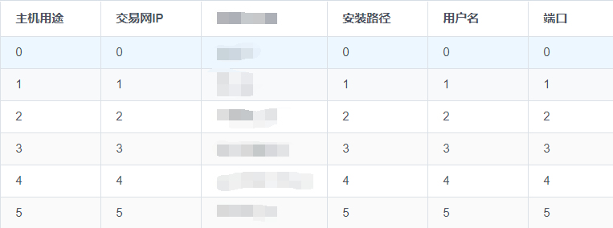
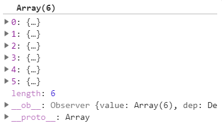
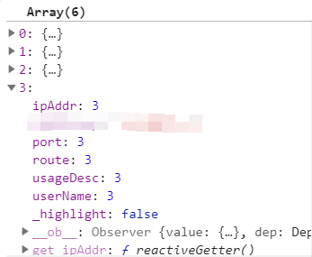
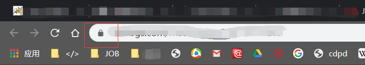
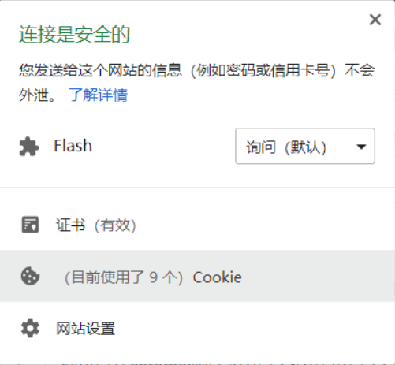
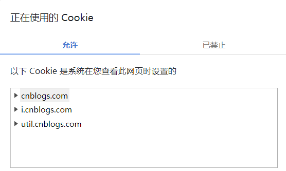
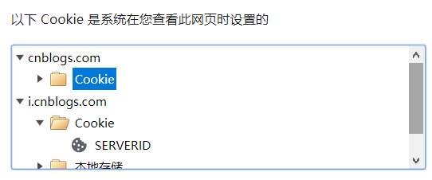

在开发时，碰到一个需求，需要保存一个表的信息（非隐私），希望下次打开还存在。于是想到用cookie，一番折腾完成。示例数据都是假的，打马赛克是怕泄密。

这个表取名为Data，为Array，每一行是一个Object：

1.什么是cookie?
Cookie 是在您的计算机上存储在小的文本文件中的数据。当 web 服务器向浏览器发送网页后，连接被关闭，服务器会忘记用户的一切。Cookie 是为了解决“如何记住用户信息”而发明的：
Cookie 保存在名称值(name-value)对中，加上分号空格隔开，如：
"name1=value1; name2=value2; name3=value3"当浏览器从服务器请求一个网页时，将属于该页的 cookie 添加到该请求中。这样服务器就获得了必要的数据来“记住”用户的信息，需要浏览器开启本地 cookie 支持。
你可以在chrome浏览器中点击这里查看此某网站所有cookie：


2.cookie设置的语法：
document.cookie = "cookieName=something; expires=Fri Aug 16 2019 10:08:34 GMT+0800; path=/dir;domain=myblog.com; max-age=3600; secure=true";
如下示例，许多属性是可以被省略的。注意，如果网页比较复杂，省略了path或者domain，可能导致设置删除会麻烦一些，因为找不到这个cookie。下图的cnblogs.com等就是域名。
 
3.设置cookie
function setCookie (name, value, day)
{
if(day !== 0){ //当设置的时间等于0时，不设置expires属性，cookie在浏览器关闭后删除
var expires = day * 24 * 60 * 60 * 1000;
var date = new Date(+new Date()+expires);
document.cookie = name + "=" + escape(value) + ";expires=" + date.toUTCString();
}else{
document.cookie = name + "=" + escape(value);
}
};若要想修改某个cookie，只需要用此种方法，给定此cookie的name值，写入新的value值，即可覆盖。
4.读取cookie
function getCookie(name)
{
var arr,reg=new RegExp("(^| )"+name+"=([^;]*)(;|$)");
if(arr=document.cookie.match(reg))
return unescape(arr[2]);
else
return null;
} cookie获取正则解析："(^| )" + name + "=([^;]*)(;|$)" (^| )匹配cookie开头或空格（cookie键值对之间用分号空格隔开），也就是cookie键值对的开始；
接着是cookie的名称name，（[^;]*）匹配除分号以外的任意字符，也就是cookie键值对的值；
最后(;|$)匹配分号或整个cookie的结尾，也就是cooke键值对的结尾。5.删除cookie
function delCookie(name)
{
var exp = new Date();
exp.setTime(exp.getTime() - 1);
var cval=getCookie(name);
if(cval!=null)
document.cookie= name + "="+cval+";expires="+exp.toGMTString();
}删除某个cookie，只需要把它的过期时间调到某个之前的时间就可（减去1）。其实并没有删除，在浏览器里可以看到它，既然到期不能用了那也是实际意义上的删除。
参数解释：
/*
* @param name cookie的名称
* @param value cookie的值
* @param day cookie的过期时间
*/5.本例实现
设置:
setCookie () { // 设置cookie
let tempStr = ''
for (let i = 0; i < this.Data.length; i++) { // 将每一行转换为字符串后拼接
tempStr = tempStr + JSON.stringify(this.Data[i]) + '#'
}
let date = new Date()
date.setTime(date.getTime() + (30 * 24 * 60 * 60 * 1000))// 设置30天过期
let expires = 'expires=' + date.toGMTString()
document.cookie = 'DataTableCookie=' + encodeURIComponent(tempStr) + ';' + expires + ';path=/'
},获取:
getCookie () { // 获得cookie
let decodedCookie = decodeURIComponent(document.cookie)
let decodedArr = decodedCookie.split(';')[0].split('=')[1].split('#')
decodedArr.pop()// 去掉最后一个''
for (let i = 0; i < decodedArr.length; i++) {
this.Data.push(JSON.parse(decodedArr[i]))
}
},删除:
delCookie () { // 删除cookie
let expires = new Date()
expires.setTime(expires.getTime() - 1)
let currentCookie = document.cookie
if (currentCookie != null) {
document.cookie = 'DataTableCookie=' + currentCookie + ';expires=' + expires.toGMTString()
}
},cookie设置语法：
document.cookie = "cookieName=mader; expires=Fri, 31 Dec 2017 15:59:59 GMT; path=/dir;domain=myblog.com; max-age=3600; secure=true";